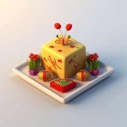

Spring's Arrival – Time for a 3000-Year-Old Party!
Nowrouz marks the first day of spring and the start of the Persian New Year. Flowers, feasts, and a whole lot of tradition!

The Haft-Seen: More Than Just Seven Things!
The Haft-Seen setup involves seven items that symbolize health, wealth, and prosperity. Fancy table? Absolutely!